Longren Colorado Newsletter #02 - 15.09.2025 ------------------------------ Hello friends and family, We are into autumn now and I hope you have had a lovely year so far. Personally, I've had quite a rollercoaster of a time. Much has happened since I last wrote and I'd like to share a bit of my happenings with you. Last newsletter, I wrote about my job with the National Oceanic and Atmospheric Administration (NOAA) and my work at the observatory in American Samoa. Since then, the federal government in the United States has seen a huge shift. As part of a vast number of quick changes, I was laid off from my job at NOAA at the end of February. 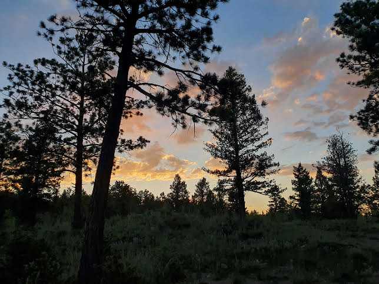 Sunset in the mountains near Boulder, Colorado. Since February, I've spent my time unemployed and bouncing between Colorado and Utah. While in Colorado, I focused on flying airplanes to work towards a new rating. For most of the summer, I'd have flight training for a week or two in Colorado. Then, I'd make the eight hour drive over the mountains to the Salt Lake City area in Utah to stay with my partner, Tasha, and her family. Tasha began a job in the spring based out of Fort Collins, Colorado surveying streams across Colorado and Wyoming. Her job was cut too not far into summer due to reductions in federal science funding. We repeated that same trip for just about the whole summer. 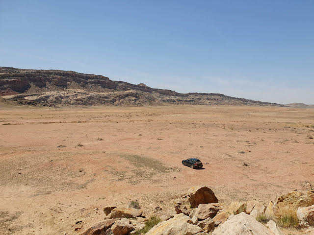 The desert of Utah. While it was tough to lose our jobs abruptly, we did gain the chance to travel the western United States. From Oregon and California to Nevada and Montana, we were forced into having the time off to see and do the things we have wanted to for a long time. In that way, this past summer was special for me. 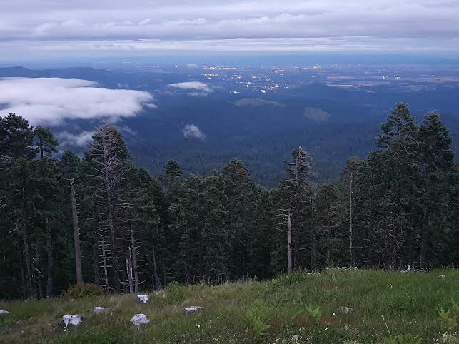 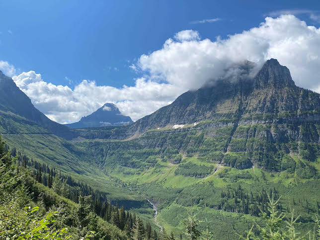 The view from Mary's Peak outside of Corvallis, Oregon (top). Inside of Glacier National Park in Montana (bottom). Outside of traveling and looking for a new job, most of my time this summer was studying and training for my instrument rating. With this new rating, I'd be able to fly in clouds, rather than having to steer around them. To get to that point safely, I had to spend a lot of time in clear weather with an instructor, but without being able to look outside the airplane. Only the airplane instruments told me what was happening. 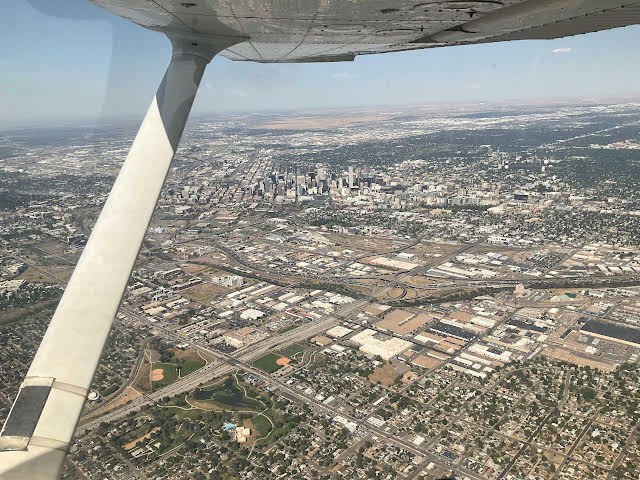 Denver, Colorado from the air. At first, controlling the airplane without being able to see outside the windows took my entire concentration. After a number of hours, it got easier. Soon enough, I could be talking on the radio and navigating without dropping 300 feet. 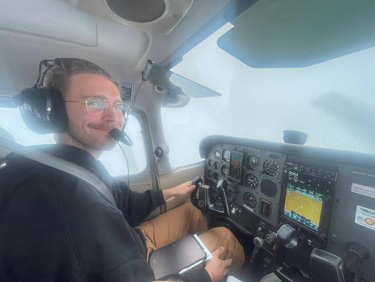 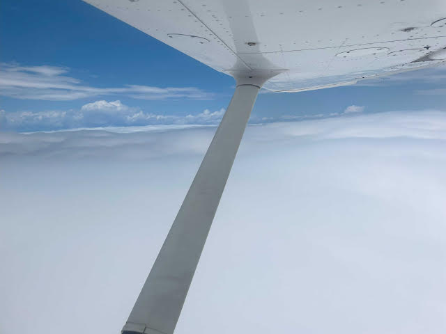 Me flying in a cloud (top). Breaking out on top of a cloud layer (bottom). A couple dozen hours of training later, I was ready to take the exam. I flew myself from Colorado over to Kansas, where the examiners had more availability, and for about four hours showed off what I had learned. Thankfully, and with only a few more wrinkles, I passed. 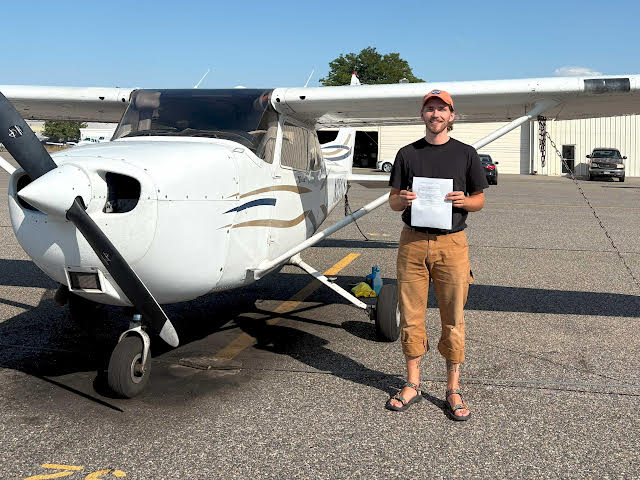 Me with my new pilot rating. While flying around learning new things, I saved the coordinates from my transponder's location and plotted them on a map. The farthest north I flew was Cheyenne, Wyoming and the farthest south was Colorado Springs, Colorado. 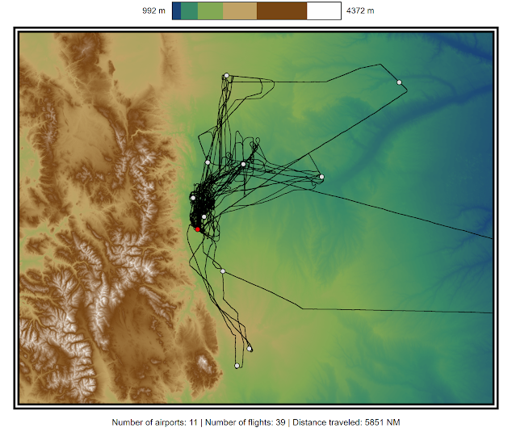 The black lines are all of my flight tracks while flying around Colorado training for the instrument rating. The red dot is my home airport and white dots are landing airports. All in all, for me it has been an eventful summer. A lot of driving, a lot of uncertainty, but overall, I've had a lot of fun. As they say, when life gives you lemons. 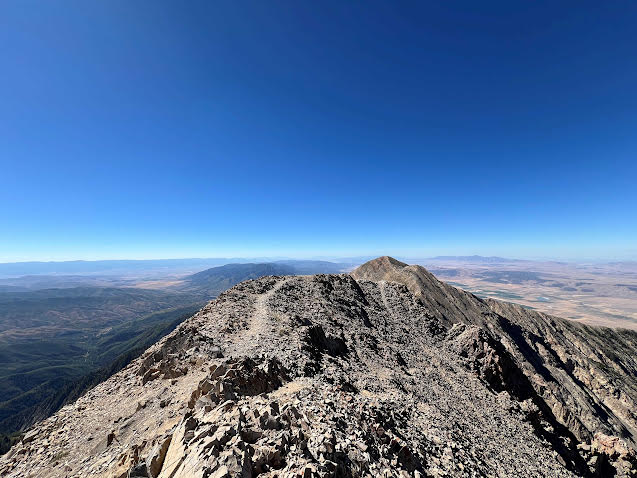 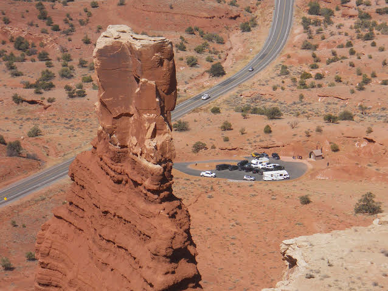 Seeing the sights of Utah, from Mount Nebo (top) to Chimney Rock (bottom). As of late August, I am back at McMurdo Station, Antarctica. More on that in the next one. Take care, Luke 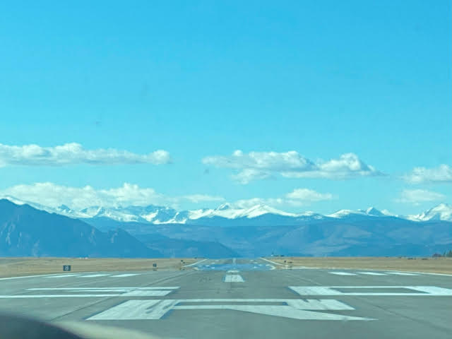 ------------------------------ ------------------------------ Previous newsletters can be found on my website. |